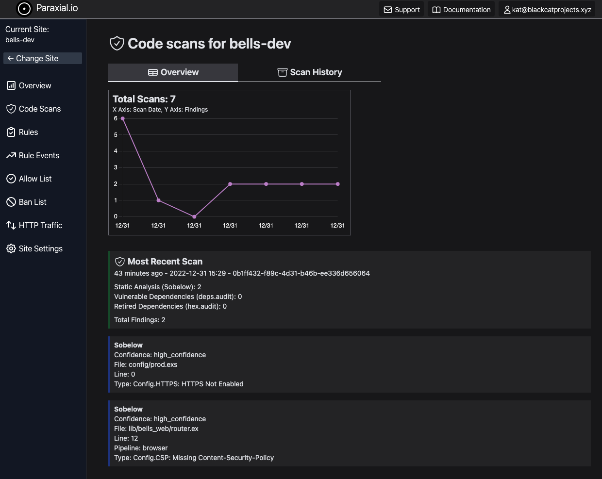

Code Scans
Introduction
There are three popular security tools for ensuring the security of Phoenix applications:
Sobelow, for static analysis of source code for vulnerabilities, https://github.com/nccgroup/sobelowdeps.audit, to scan a project's dependencies for vulnerabilities, https://github.com/mirego/mix_audithex.audit, to scan for dependencies that have been marked as retired, https://hexdocs.pm/hex/Mix.Tasks.Hex.Audit.html
It may seem straightforward to integrate these tools into your existing CI/CD pipeline, but consider the following questions:
- When was the last time the scan ran successfully?
- Do you have a record of when all these scans happened?
- Did the numbers of vulnerabilities increase or decrease compared to the previous scans?
- How do you view the findings of the most recent scan? Of a scan from 3 months ago?
With the Paraxial.io agent, you now have access to the command:
mix paraxial.scan
This will run Sobelow, deps.audit, and hex.audit on your application, then upload the results to the Paraxial.io backend:

1. Create your site, add the Paraxial.io agent
In the Paraxial.io web interface, create a site for each environment you want to perform scans in. These are typically dev, test, or prod. For this tutorial, we use dev. In the "Site Settings" page, get your Site API key.
In your Phoenix app, open config/dev.exs and add:
config :paraxial,
paraxial_api_key: System.get_env("PARAXIAL_API_KEY"),
Add the Paraxial.io agent as a config in mix.exs:
{:paraxial, "~> 2.8.2"}
2. Install Sobelow
Sobelow is installed as a dependency of Paraxial.io. To flag findings as false positives, use code comments or Sobelow hashes. You can read more about how to flag false positives here - https://github.com/nccgroup/sobelow#false-positives
The article "Elixir Security: Real World Sobelow" also discusses this, see section 5. False Positives - https://paraxial.io/blog/real-sobelow
The mix paraxial.scan command will skip findings marked as false positives.
3. Test the install
Run mix deps.get to install the Paraxial.io agent. To see if the install was successful, run:
mix paraxial.scan
If the agent is installed correctly, and your site's API key is correct, you should see the following output:
19:36:42.184 [info] [Paraxial] API key found, scan results will be uploaded
[Paraxial] Scan findings: %Paraxial.Scan{
api_key: "REDACTED",
findings: [
%Paraxial.Finding{
...
4. View the scan results
The scan task will run Sobelow, deps.audit, and hex.audit on your project, and print the results in the terminal. Go to your site in app.paraxial.io to see the scan results, and a history of previous scans.
Flags
Command line flags for mix paraxial.scan:
--add-exit-code - Return unix exit code 1 if a scan has findings, 0 if no findings. Useful in CI/CD pipelines to fail when findings are detected. Also returns 1 if an error occurs.
--sobelow-config - If you would like to use a .sobelow-conf file, this flag is required to read it. By default, the file is ignored.
--sobelow-skip - Required to skip Sobelow findings. Note that a .sobelow-conf file being used overrides this setting.
--gpl-check - Create a vulnerability if a dependency using a GPL license is found.
--no-license-scan - Do not perform the license scan that occurs automatically.
--paraxial_url - Optional, Paraxial url as a cli flag instead of the config value.
--paraxial_api_key - Optional, Paraxial API key as a cli flag instead of the config value.
--sarif - Output findings in SARIF format.
--github_app - Used to create PR comments in GitHub. See the GitHub App page for full details.
--install_id - GitHub App, the install ID in your GitHub account
--repo_owner - GitHub App, repo owner name
--repo_name - GitHub App, repo name
--pr_number - GitHub App, PR number
--quiet-no-issues - GitHub App, a GitHub comment is no longer created when a scan returns 0 findings.
Umbrella Applications
To use mix paraxial.scan with your Umbrella application, you must update the aliases functions in the top level mix.exs file to include:
defp aliases do
[
sobelow: ["cmd mix sobelow"]
]
end
This is to run Sobelow against all child applications.